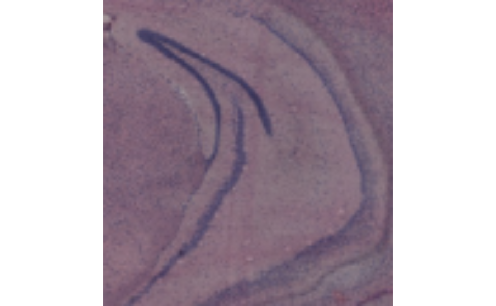
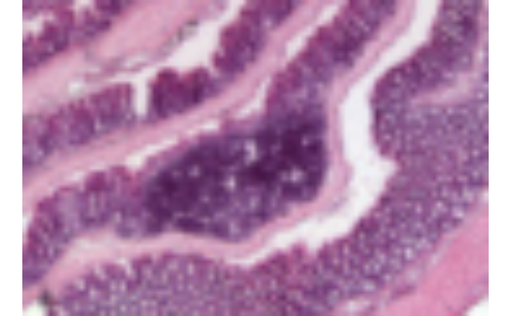
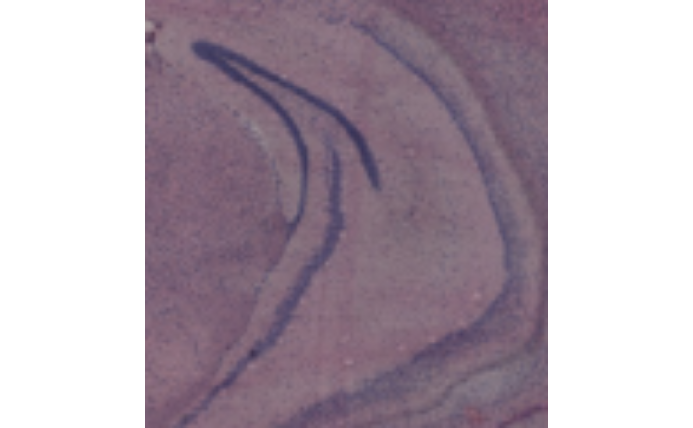
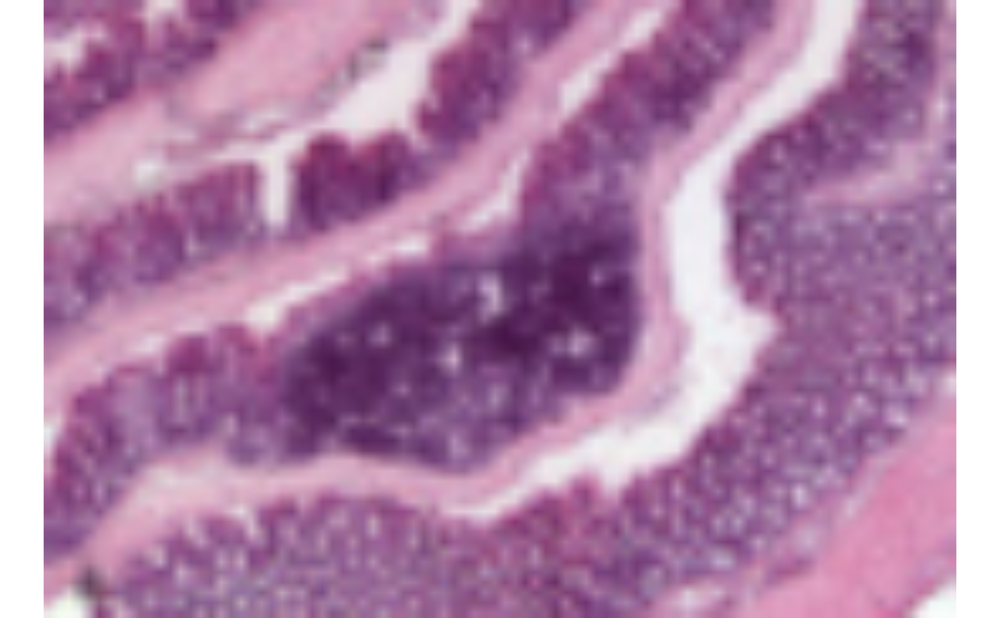

Plot H&E images
ImagePlot.RdIf images are loaded into the Seurat object with LoadImages,
this function can be used to quickly plot the images in a grid. If
you have applied transformations to the images, e.g. with
RigidTransformImages, you can specify image_use = "transformed"
to plot the transformed images instead.
Arguments
- object
A Seurat object
- label_by
A string specifying a meta data column to label plots by. This needs to be a
characterorfactorand multiple labels for each section are not allowed.- image_use
String specifying image type to use, either 'raw' or 'transformed'
- crop_area
A numeric vector of length 4 specifying a rectangular area to crop the plots by. These numbers should be within 0-1. The x-axis is goes from left=0 to right=1 and the y axis is goes from top=0 to bottom=1. The order of the values are specified as follows:
crop_area = c(left, top, right, bottom). The crop area will be used on all tissue sections and cannot be set for each section individually. using crop areas of different sizes on different sections can lead to unwanted side effects as the point sizes will remain constant. In this case it is better to generate separate plots for different tissue sections.- sampleIDs
An integer vector with section numbers to plot
- ncol
An integer value specifying the number of columns in the plot grid
- mar
Margins around each plot. See
parfor details- return_as_gg
Should the plot be returned as a
ggplotobject?- bg_color
Background color (only set when
return_as_gg=FALSE)- title_color
Title color (only set when
return_as_gg=FALSE)
Value
No return value. Draws a plot of the H&E images or alternatively,
returns a patchwork composed of ggplot objects.
See also
Other spatial-visualization-methods:
AnglePlot(),
FeatureViewer(),
MapFeatures(),
MapFeaturesSummary(),
MapLabels(),
MapLabelsSummary(),
MapMultipleFeatures()
Examples
library(semla)
# Load example Visium data
se_mbrain <- readRDS(system.file("extdata/mousebrain", "se_mbrain", package = "semla"))
se_mcolon <- readRDS(system.file("extdata/mousecolon", "se_mcolon", package = "semla"))
se_merged <- MergeSTData(se_mbrain, se_mcolon)
# Load images
se_merged <- LoadImages(se_merged)
#>
#> ── Loading H&E images ──
#>
#> ℹ Loading image from /Users/lovisafranzen/Documents/PhD_Projects/stu2/semla/inst/extdata/mousebrain/spatial/tissue_lowres_image.jpg
#> ℹ Scaled image from 600x565 to 400x377 pixels
#> ℹ Loading image from /Users/lovisafranzen/Documents/PhD_Projects/stu2/semla/inst/extdata/mousecolon/spatial/tissue_lowres_image.jpg
#> ℹ Scaled image from 541x600 to 400x444 pixels
#> ℹ Saving loaded H&E images as 'rasters' in Seurat object
ImagePlot(se_merged)
 # Plot only selected tissue sections
ImagePlot(se_merged, sampleIDs = 1)
# Plot only selected tissue sections
ImagePlot(se_merged, sampleIDs = 1)
 # Change order of plot
ImagePlot(se_merged, sampleIDs = 2:1)
# Change order of plot
ImagePlot(se_merged, sampleIDs = 2:1)
 # Add a sample_id column and label plots
se_merged$sample_id <- ifelse(GetStaffli(se_merged)@meta_data$sampleID == 1, "brain", "colon")
ImagePlot(se_merged, label_by = "sample_id")
# Crop image and remove margins
ImagePlot(se_merged, crop_area = c(0.4, 0.4, 0.7, 0.7), sampleIDs = 1, mar = c(0, 0, 0, 0))

ImagePlot(se_merged, crop_area = c(0.45, 0.55, 0.65, 0.7), sampleIDs = 2, mar = c(0, 0, 0, 0))

# Add a sample_id column and label plots
se_merged$sample_id <- ifelse(GetStaffli(se_merged)@meta_data$sampleID == 1, "brain", "colon")
ImagePlot(se_merged, label_by = "sample_id")
# Crop image and remove margins
ImagePlot(se_merged, crop_area = c(0.4, 0.4, 0.7, 0.7), sampleIDs = 1, mar = c(0, 0, 0, 0))

ImagePlot(se_merged, crop_area = c(0.45, 0.55, 0.65, 0.7), sampleIDs = 2, mar = c(0, 0, 0, 0))
